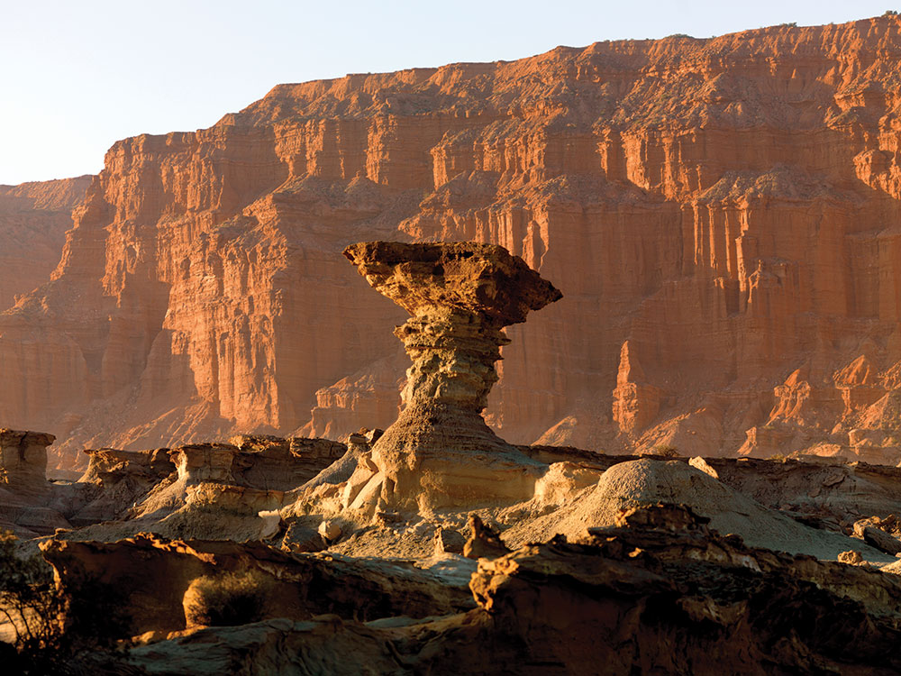
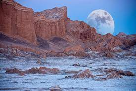
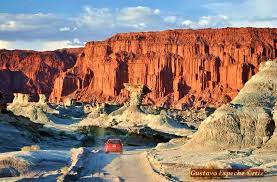
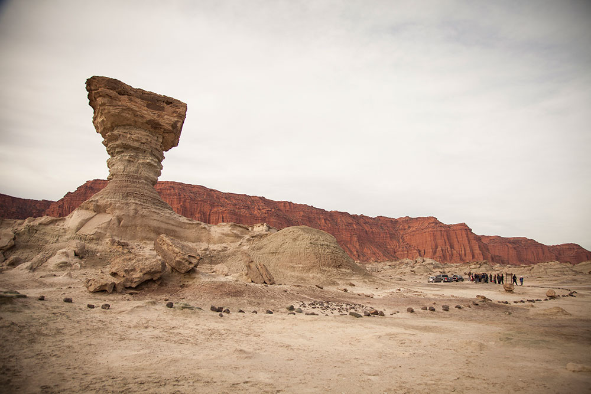
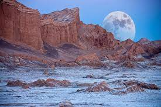
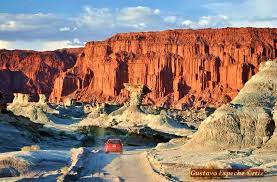
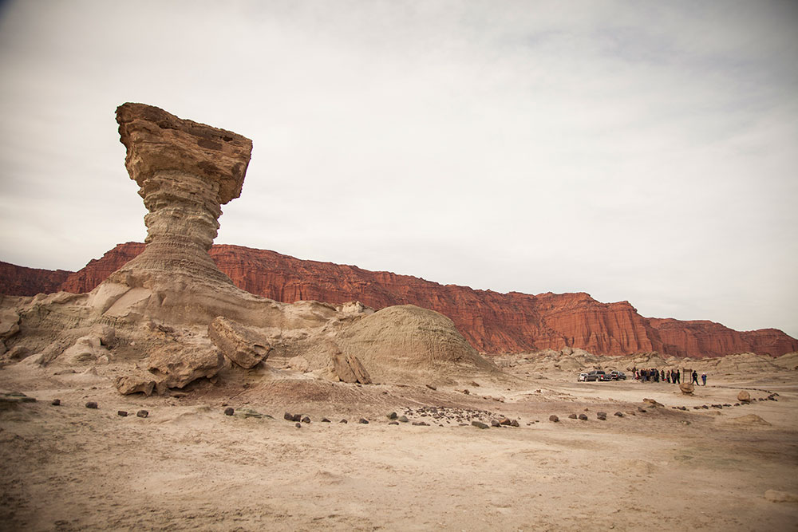

SAN JUAN
Valle de la luna
 En San Juan, un sitio donde la naturaleza lleva trabajando algo más de 220 millones de años. Un paisaje de otro planeta que es Patrimonio de la Humanidad. El Parque Natural Provincial Ischigualasto se encuentra emplazado en el nordeste de la provincia de San Juan, a 330 km de la ciudad capital y a 75 km de la localidad de San Agustín del Valle Fértil. Este pequeño pueblo es la base de partida de las excursiones que permiten conocer –a través de un circuito estrictamente delimitado- la pequeña porción del Parque accesible para el turismo. Popularmente conocido como “Valle de la Luna”, este fascinantemente extraño lugar del mundo ocupa unas 62 mil hectáreas y es, junto a su vecino Parque Nacional Talampaya, en la provincia de La Rioja, Patrimonio de la Humanidad. Su importancia radica en el valor científico de los hallazgos paleontológicos realizados en el lugar, donde se encuentra una secuencia prácticamente completa del Período Triásico (superior - medio e inferior) de la Era Mesozoica. Recorrer Ischigualasto significa posar los pies sobre los mismos caminos que hace 180 millones de años recorrieron los dinosaurios. El suelo de aspecto lunar y las particulares geoformas esculpidas por el agua, el sol y el viento sobre las rocas a lo largo de millones de años, hacen de este un sitio de otro planeta. Visitarlo permite espiar la evolución de la Tierra. En el ingreso a Ischigualasto, el Cerro Morado regala la vista de paredes verdaderamente enormes. Para obtener las mejores panorámicas hay caminatas hasta su cumbre. En la cima se avistan cóndores y se observa la particular vegetación del lugar: especies de monte, cactáceas, retamas y jarillas. Entre ellas deambulan guanacos, zorros y vizcachas. Hacia el interior del Parque, el circuito principal -que se recorre exclusivamente en vehículo y con la compañía de un guía autorizado- alcanza 42 km y lleva 3 horas de duración. Durante el paseo se realizan paradas para tomar las infaltables fotografías en las estaciones: El Gusano, Valle Pintado, Cancha de Bochas, El Submarino y El Hongo, donde se descubre el trabajo sereno, permanente pero inclaudicable, de la naturaleza: las piedras presentan aquí extrañas y misteriosas formas. En las noches de luna llena, en la oscuridad sanjuanina la luz del satélite terrestre vuelve a Ischigualasto aún más extraño y deslumbrante. Recorrer el Valle Pintado, observar las caprichosas geoformas (El Submarino, La Esfinge, Las Bandejas, El Hongo), andar la antigua tierra de los dinosaurios en el silencio de la noche es una experiencia única e inolvidable, para la vista… y para el espíritu. En la entrada del Parque, el Centro de Interpretación montado por el Museo de Ciencias Naturales de San Juan, presenta réplicas de los fósiles más importantes hallados aquí. Y tiene como misión difundir la importancia científica de Ischigualasto.
 




